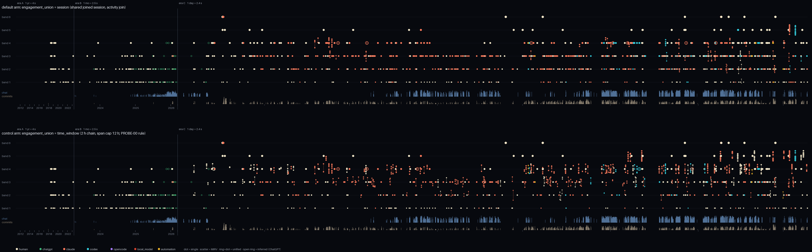
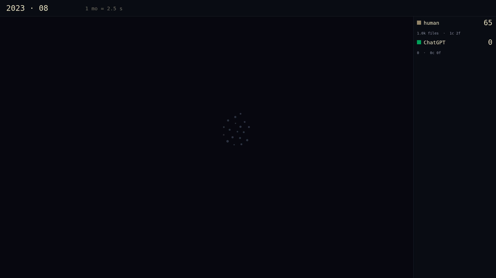
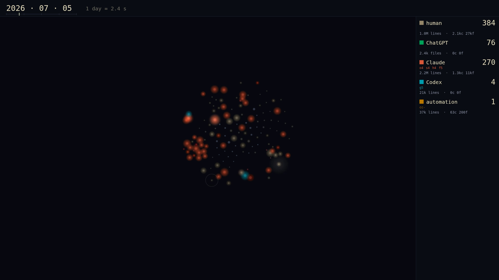
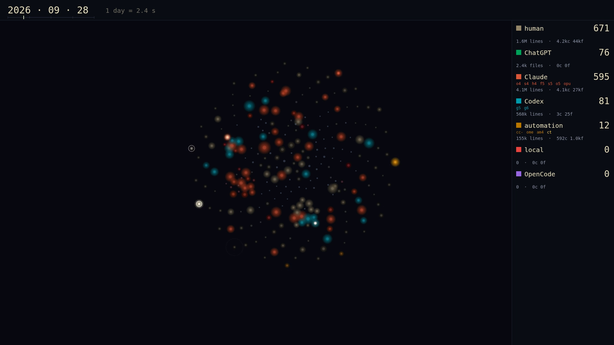
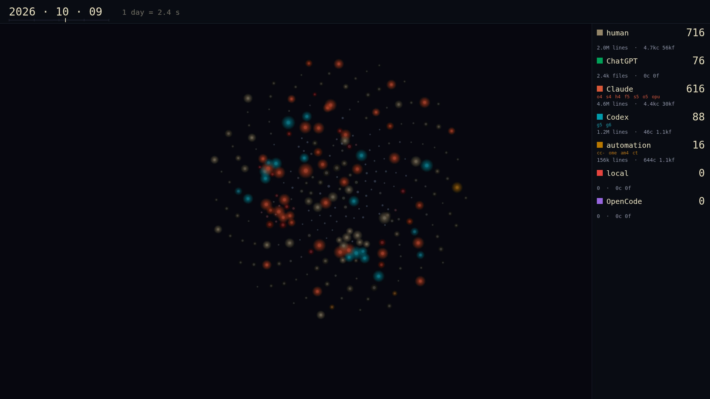
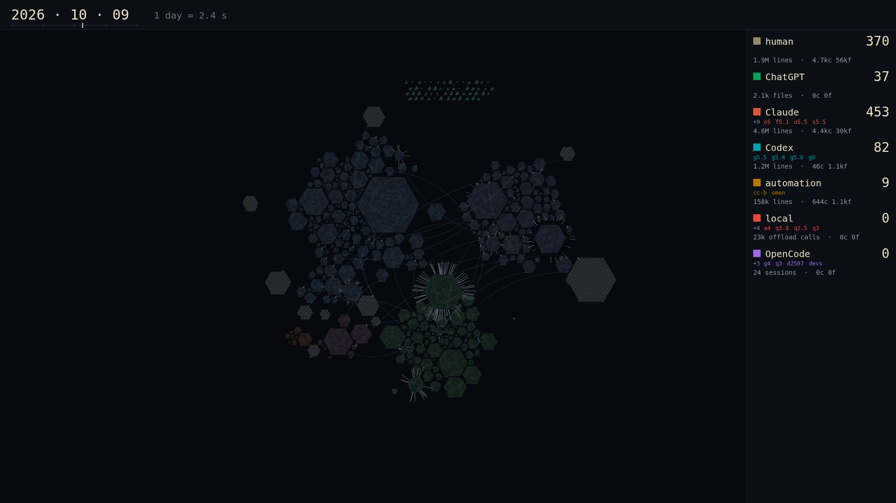
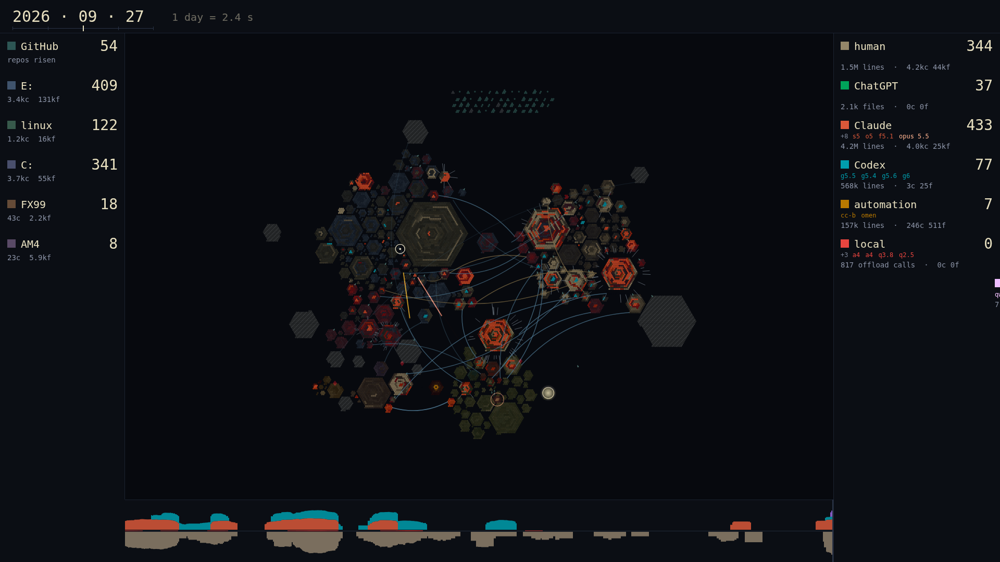
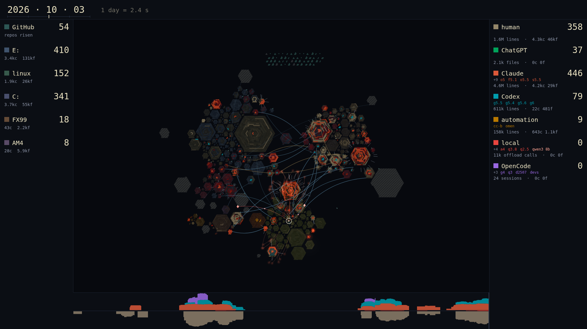
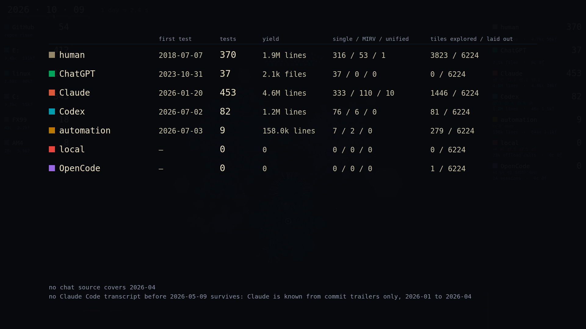

Where things stand
| # | Task | State | What it produces | Record |
|---|---|---|---|---|
| 0 | Scaffold, goal, access | done | Repo, contract v1, direction, survey, venv (numpy, static ffmpeg), gh installed, goal rev 20, ct item | known-world-plan/0-index.md |
| 1 | Corpus run (Sonnet manager, Haiku fleet) | done | 210,647 merged events, 121 lineages, 1,155 sessions, 2011-08 → 2026-10-09; privacy scan 0 violations; GitHub private repos pending auth; chat hole 2026-04 | Workflow wf_6e7b2cbe-dfc: 55 agents, 50 min; corpus/CORPUS-REPORT.md |
| 2 | Implementation strategy (Opus panel, Sonnet judges) | done | STRATEGY.md: one integer clock, two physics (fields capped at L 0.55, launches in lighter above); launches by session grouping (816 at defaults; time-window control arm reproduces the probe's 415); tree-ring regions, constellation discs, migration bridge over open sea; measured export ≈ 9 min via CDP capture; accepted with four amendments (§12) | engineer 106 · composer 98 · cartographer 94 |
| 3 | Thin slice (one Sonnet builder) | done | Slices 1–3 with receipts: launch strip (both arms), clock + sync probe (0.0 ms), thin slice with blooms, tones, bells, legend, hum, static, collapse; full piece exported in 3.1 min; two defects caught by receipts and fixed | commits 3930307, c6e4f83, 19d45d1 |
| 4 | Laps (eight one-variable experiments) | pending | laps/LAP-NN/RESULT.md, then the full render | after 3 |
| — | Export budget spike | done | PNG capture ≈ 250 ms per 1080p frame at 5k, 20k and 80k tiles (canvas draw 3 to 57 ms); a 60-frame H.264 + AAC mp4 verified. Full piece: 1.4 to 1.9 h offline unless frames are piped raw, pages run in parallel, or 24 fps | spikes/01-canvas-budget/RESULT.md |
| — | RaidUI reuse (Derek's prior time player) | done | Playback core vendored: pure render-state, playback controller with deterministic tick, density grid, overlay compositor, decay trail, scrubber. Missing parts named for the strategists | SURVEY.md §4b, render/vendor/raidui/ |
| — | Launch probe (payload model on real data) | done | 415 launches on Derek's lineages at the default thresholds (215 single, 200 MIRV); MIRVs rise from 0 in January to 47 of 70 in July 2026; yields span five orders of magnitude; nations enter 2017 (human), 2023-04 (ChatGPT), 2025-10 (Claude), 2026-06 (Codex), 2026-07 (builders, local seats), 2026-09 (OpenCode) | laps/PROBE-00-launches/RESULT.md |
| — | Local-seat repo-card arm | deferred | Capability record per seat | 30B and AM4 tool seats absent under the bench27 all-27B hold; door: default lane not live |
Derek's decisions (2026-10-09)
- Chat privacy: metadata only. Timestamps, roles, project, model, token counts, tool names. No text, titles or previews leave the machine; cloud agents see counts.
- Time span: full record, compressed prologue. Chat from 2023-04, code from 2026-01, the burst from 2026-03; quiet years stay visibly quiet.
- Lab record: a new goal (G-known-world) beside the focus G-bench27.
- GitHub: about half the repo volume is private; collectors need authenticated read access.
- The payload model (gut call): commit volume is the industrial base, rendered as fields; the detonations are intentional work episodes with a yield (lines, files, integrations, moving pieces). Shape evolves: blip, larger blips, MIRV scatter, unified blip. The viewer watches the operator and the industry evolve at once: each agent class and model generation is a new nation; the legend grows.
Open for Derek
- access Mint a fine-grained personal access token, read-only (Contents, Metadata; all repositories; 90 days) and run
gh auth login --with-tokenin your own terminal. Private https clones already work through the stored git credential; the token is only for listing private repos and their dates. - intent The intent hot/capsule budget rule was already over before rev 20 (2121/2048); it reads 2166/2048 now. Trim or raise is yours.
Corpus at a glance (survey)
- repos
- ~36 C:, ~38 E:, ~30 nested, ~25 Linux, 11 AM4, 3 FX99, 50 public + private GitHub
- chat span
- 2023-04 → today, continuous
- code span
- 2026-01-17 → today; burst from 2026-03
- biggest walk
- Windows Codex sessions, 10.6 GB over FUSE
- ledger
- HEARTH 472k events (75% polling, dropped)
Visual grammar
human ChatGPT Claude Codex OpenCode local models automation third-party
Continents are surfaces; regions are repos; tiles are directories. Unknown is void, explored is dim, active is lit. Hue is who did the work.
Pacing (initial)
| Era | Span | Rate |
|---|---|---|
| A | 2011-08 → 2023-03 | 1 year = 4 s |
| B | 2023-04 → 2026-02 | 1 month = 2.5 s |
| C | 2026-03 → now | 1 day = 2.4 s |
About 11 minutes; a 90-second cut at a uniform multiple. Lap 3 varies it.
Verdict pack 1: the event model and the thin slice (2026-10-09)
Slices 1 to 3 are built with receipts. The full 11-minute piece exported with audio in 3.1 minutes (measured, 10 workers, under bench27 load); frames hash-identical across browsers; sync probe 0.0 ms. Videos: laps/LAP-03-thin-slice/out/{full,cut,excerpt}/final.mp4. Strip: laps/LAP-01-launch-strip/merge-pin/strip-compare.png.





| Question (Derek's call) | Arms | Fable's provisional default |
|---|---|---|
| Grouping of tests into launches | session (938 git launches, 47 MIRV) · time_window (390, 209 MIRV) · combined | combined: session where a session is observed (294 of 954 tests, mostly after 2026-05), time_window with a 12 h cap otherwise; the time-window strip shows the MIRV cascade from 2026-03 you described |
| Collapse threshold | 8 / 12 / 16 launches per second | lap after the grouping call; 31 s of chords at 8 with 1,512 launches, less under combined |
| Non-git launches (574 at ≥ 3 files/day) | min files 3 / 10 / 20; bulk copies excluded | audit by directory and year in slice 4; raise to 10 if generated pipelines dominate |
| Claude's legend entry | 2026-01-20 (own commits) · 2025-10 (trailer on a third-party lineage) | 2026-01-20; footer notes no Claude transcript survives before 2026-05-09 |
| Generation chips | major (opus 4) · minor (opus 4.5, 4.6, 4.7, 4.8) | minor, named in words, last four shown with +n; unversioned trailers get no chip |
| ChatGPT inference for git episodes 2023-11 to 2026-02 | off · time-only · path+time | path+time only (the 2025 paths need the message graph streamed) |
Slices 4 to 7: atlas, shapes, radio and camera, cut and coda (2026-10-10)
All four slices committed with receipts. Full piece: 688 s, exported with audio in 4.0 min (10 workers under bench27 load), 30 of 30 frames hash-equal in a second browser, sync probe 0.0 ms. Combined grouping: 951 launches (640 git, 311 non-git at the 10-file gate); peak 19 launches per film-second, 1.4% of frames collapsed (the 90 s cut: 43 per second, 57% collapsed). Videos: laps/LAP-07-cut-coda/out/{full,cut}/final.mp4.




- Reads without narration: constellation discs with tree-ring regions, ruins on the outer ring, the GitHub archipelago, worktree spurs, bridges, HQ beams as the countdown, offload sparks, the mirrored radio band, surface tallies on the left, nations with named generation chips on the right, and the tally card with its two data-gap lines.
- Polish queue: a chip caption overflows the right edge of the nation panel; the final era-C frame is dim by design (everything dormant) and the coda's whole-world pull carries the reveal.
- Not run: verdict laps 8 to 10 (grouping arm, collapse threshold, non-git threshold); the builder was stopped before them.
Laps
| Lap | Variable | Arms | Verdict | Preview |
|---|---|---|---|---|
| 1 | geography | surfaces as continents vs repos as continents | — | — |
| 2 | hue axis | actor class vs surface | — | — |
| 3 | rate schedule | three-rate vs two-rate; era C 1.6 / 2.4 / 3.2 s per day | — | — |
| 4 | fog half-life | 7 / 30 / 90 story-days | — | — |
| 5 | chatter rendering | beams vs rings vs band only | — | — |
| 6 | audio mapping | per-event tones vs density hum; collapse 4 / 8 / 16 per s | — | — |
| 7 | camera | fit-known-world vs fixed final frame under fog | — | — |
| 8 | third-party territory | hidden vs grey ruins | — | — |